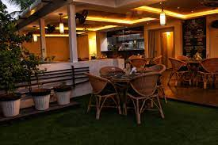

The low cost restaurant consists of many cooks from different regions of the world.It was established by our owner Mr.Mukesh Murugesan from Egmore,Chennai
Here is the main branch located in Butt Road near kathipara junction,from here we started our first shop. Then,bringing it to success and making a lot of franchises around india to make this into pan indian continental cafe. This cafe was opened by cricket star Mr.Ravichandran Ashwin on late august in Chennai.